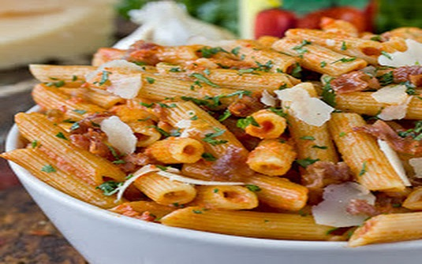
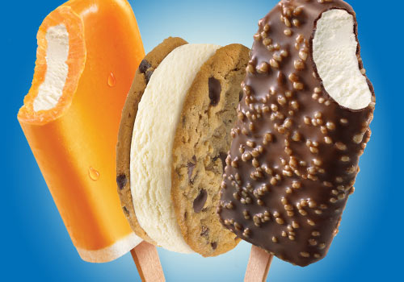

Food Blog Layout
About Burger

A burger is a sandwich consisting of one or more cooked patties of ground meat, usually beef, placed inside a sliced bread roll or bun. The patty may be pan fried, barbecued, or flame broiled.
About Pasta
Pasta is generally a simple dish, but comes in many varieties due to its versatility. Some pasta dishes are served as a first course in Italy because the portion sizes are small and simple. Pasta is also prepared in light lunches, such as salads or large portion sizes for dinner. It can be prepared by hand or food processor and served hot or cold. Pasta sauces vary in taste,
About Ice cream
Ice cream is considered as a colloidal system. It is composed by ice cream crystals and aggregates, air that does not mixes with the ice cream by forming small bubbles in the bulk and partially coalesced fat globules.
Many More

About Our Fast Food
You will be amazed at how much faster our meat thaws and cooks, which is why we like to call it "fast food." Not the fast food junk most people are used to eating, but "fast food" that is healthy, convenient and easy to cook. Below are a few highlights of our "fast food."